zone-first prototype - reference plan vs the top 3 candidates
Ranking: fewer slivers, then more "Flex · room" area, then less "Flex · storage" area, then a stable id. The candidate whose options match the reference plan's own options is outlined. Every zone is labelled with its name and size (metres, 1 dp); flex pieces are hatched and carry their class - nothing relies on colour.
zf-00 - theatre reference 12500 x 24000 mm, 4 bed, double garage
referenceL|side-G|front|wing room 94.7 m² · circulation 34.0 m² · storage 2.2 m² · sliver 0.0 m²
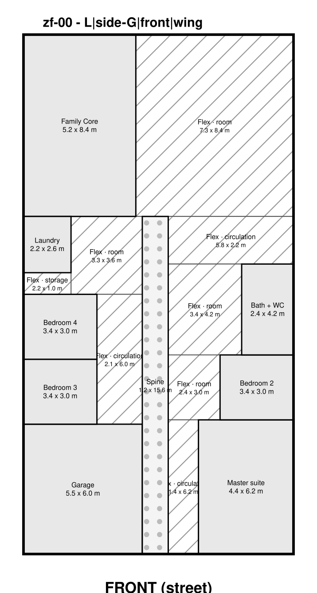
R|side-G|front|wing room 94.7 m² · circulation 34.0 m² · storage 2.2 m² · sliver 0.0 m²L|band|middle|wing room 85.9 m² · circulation 11.0 m² · storage 8.8 m² · sliver 0.0 m²
zf-01 - 2-bed 9.0 x 16.9 9000 x 16900 mm, 2 bed, single garage
referenceL|side-W|middle|garage room 35.0 m² · circulation 14.0 m² · storage 6.9 m² · sliver 0.0 m²
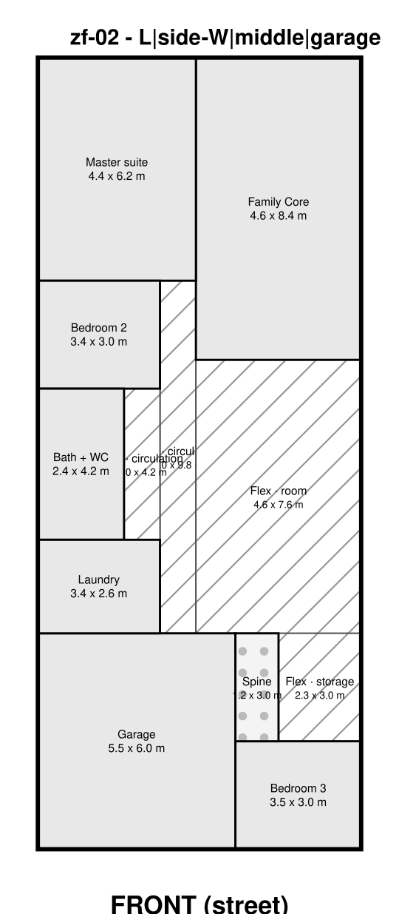
R|side-W|middle|garage room 35.0 m² · circulation 14.0 m² · storage 6.9 m² · sliver 0.0 m²
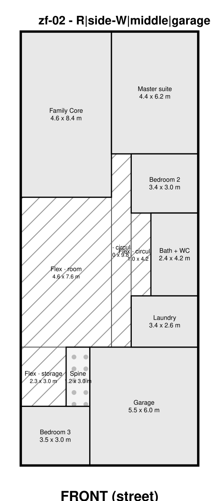
L|side-W|rear|garagematches reference room 35.0 m² · circulation 14.0 m² · storage 6.9 m² · sliver 0.0 m²
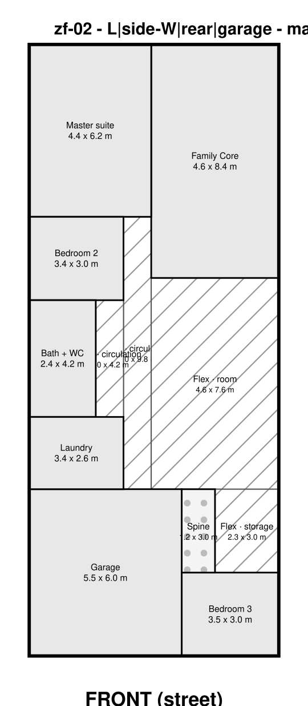
zf-03 - Turquoise Bay 9890 x 24790 mm, 4 bed, double garage
valid 4/24 generated candidates (option space 36; stack wing 4/18 · garage 0/6) · reference option: INVALID - Master at the rear conflicts with the full-width Core band (R3/R5)
referenceL|side-G|middle|wing room 63.4 m² · circulation 6.8 m² · storage 3.5 m² · sliver 0.0 m²
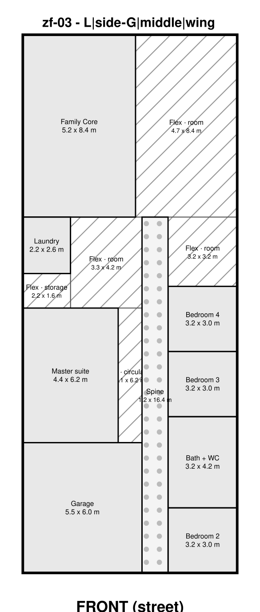
R|side-G|middle|wing room 63.4 m² · circulation 6.8 m² · storage 3.5 m² · sliver 0.0 m²
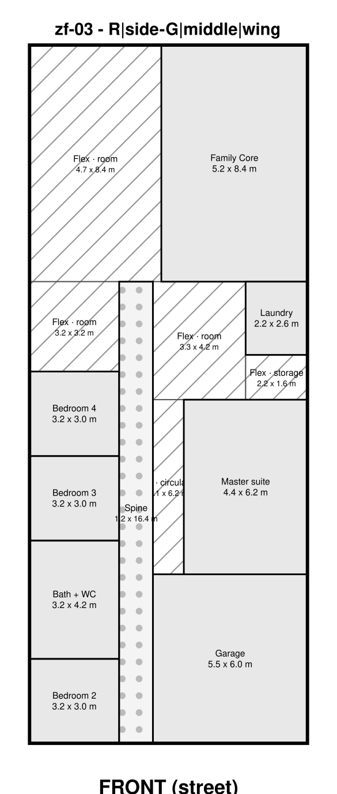
L|band|middle|wing room 44.8 m² · circulation 6.8 m² · storage 10.5 m² · sliver 0.0 m²
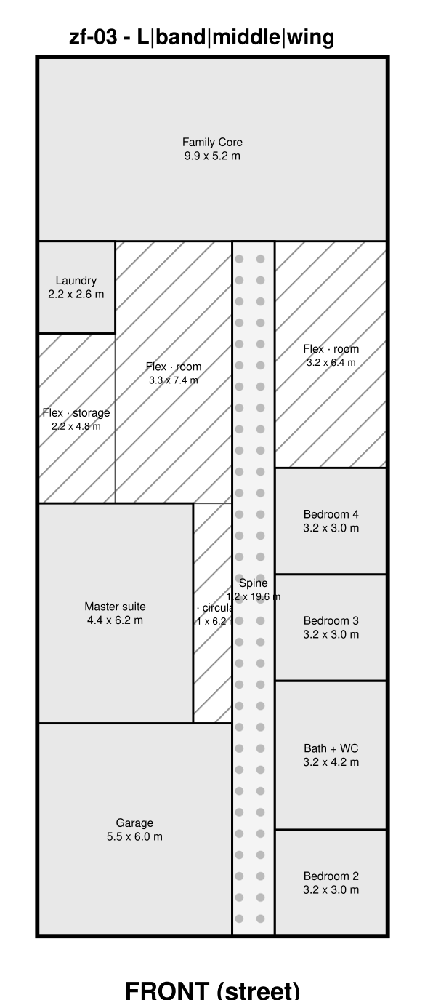
zf-04 - Torquay Beach 12490 x 24190 mm, 4 bed, double garage
valid 10/24 generated candidates (option space 36; stack wing 8/18 · garage 2/6) · reference option: INVALID - the wing column and the garage column are full: 4 bedrooms do not fit (R4)
referenceL|side-G|front|wing room 88.0 m² · circulation 21.2 m² · storage 23.6 m² · sliver 0.0 m²R|side-G|front|wing room 88.0 m² · circulation 21.2 m² · storage 23.6 m² · sliver 0.0 m²
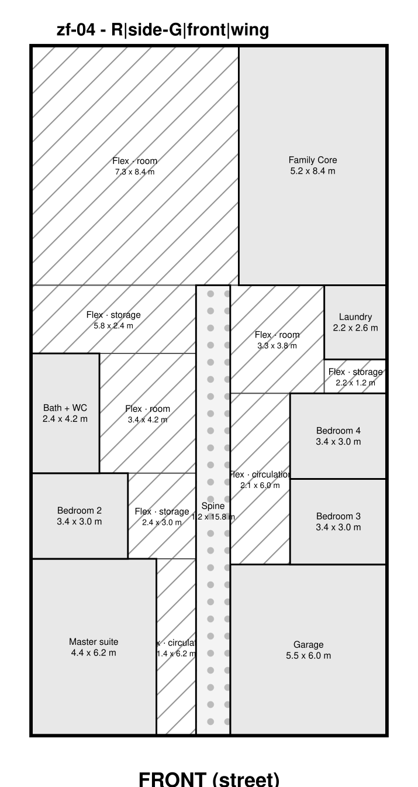
L|band|middle|wing room 55.9 m² · circulation 42.6 m² · storage 9.2 m² · sliver 0.0 m²
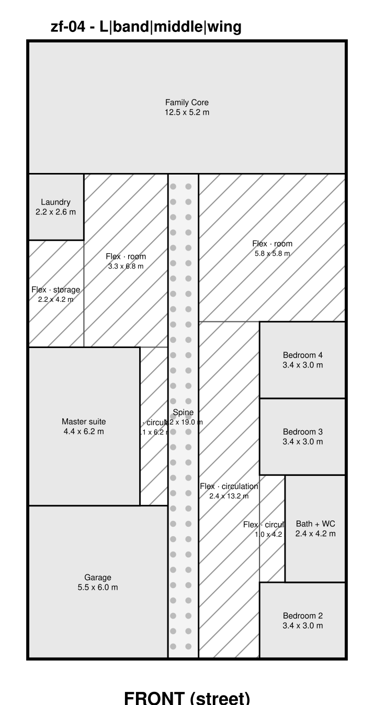
zf-05 - Swanbourne 10890 x 22590 mm, 4 bed, double garage
valid 6/24 generated candidates (option space 36; stack wing 4/18 · garage 2/6) · reference option: INVALID - the wing column and the garage column are full: 4 bedrooms do not fit (R4)
referenceL|band|middle|wing room 34.7 m² · circulation 6.8 m² · storage 13.2 m² · sliver 0.0 m²
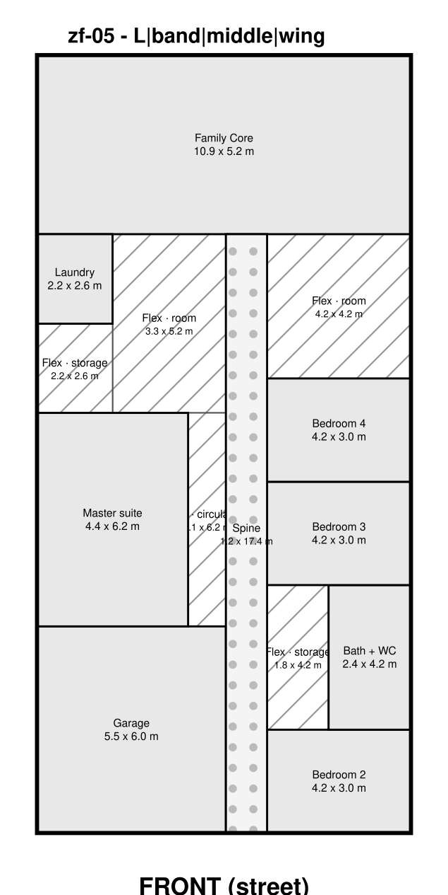
R|band|middle|wing room 34.7 m² · circulation 6.8 m² · storage 13.2 m² · sliver 0.0 m²
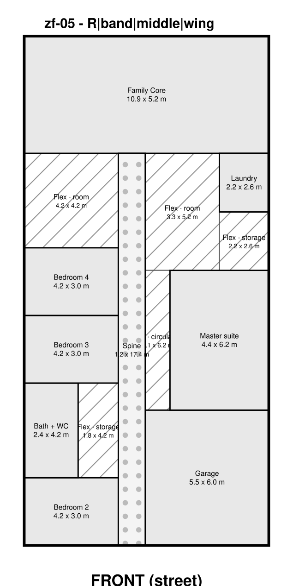
L|band|front|wing room 27.7 m² · circulation 12.7 m² · storage 11.4 m² · sliver 4.1 m²
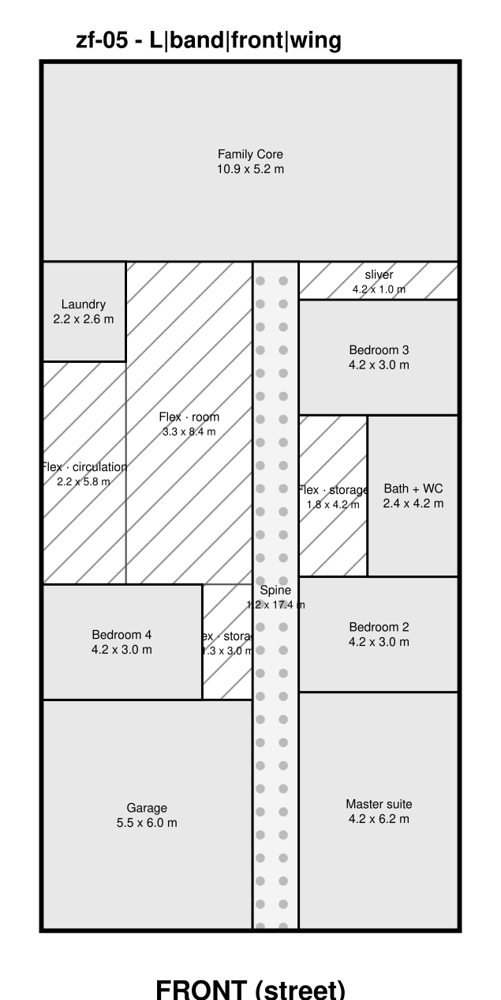
zf-06 - Sebastian 10990 x 20790 mm, 4 bed, double garage
referenceL|band|front|wing room 11.8 m² · circulation 7.3 m² · storage 17.3 m² · sliver 2.2 m²
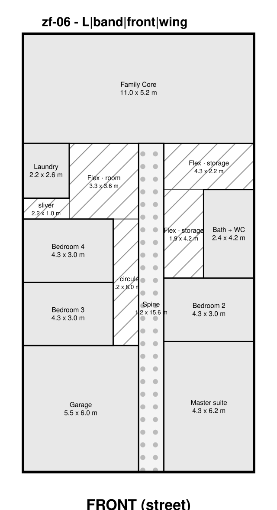
R|band|front|wing room 11.8 m² · circulation 7.3 m² · storage 17.3 m² · sliver 2.2 m²
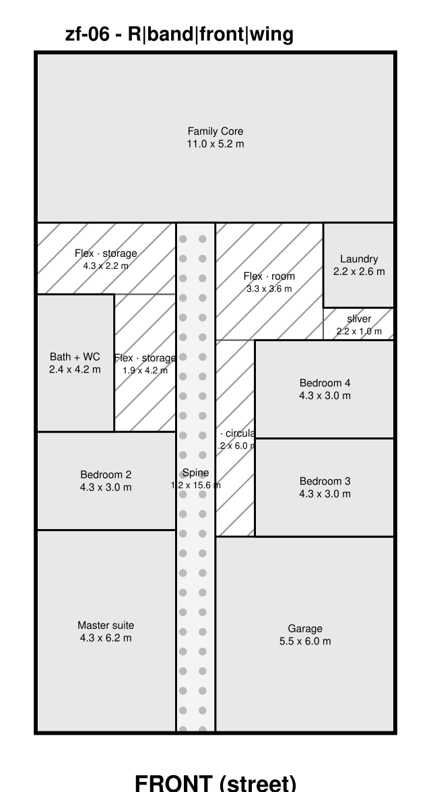
L|band|middle|wing room 11.2 m² · circulation 6.8 m² · storage 18.2 m² · sliver 1.7 m²
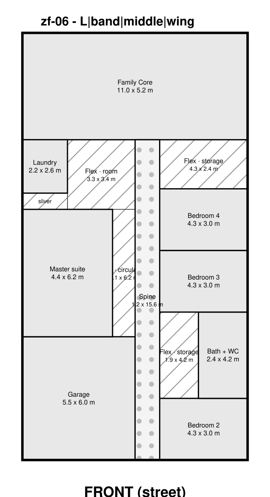
zf-07 - Riesling 11490 x 18290 mm, 4 bed, double garage
valid 0/24 generated candidates (option space 36; stack wing 0/18 · garage 0/6) · reference option: INVALID - 4 bedrooms, the wet block and the laundry do not fit in the wing and the garage column (R4)
reference
zf-08 - Manly 14990 x 21790 mm, 4 bed, double garage
valid 4/24 generated candidates (option space 36; stack wing 4/18 · garage 0/6) · reference option: INVALID - 4 bedrooms, the wet block and the laundry do not fit in the wing and the garage column (R4)
referenceL|band|middle|wing room 107.1 m² · circulation 11.0 m² · storage 3.9 m² · sliver 0.0 m²
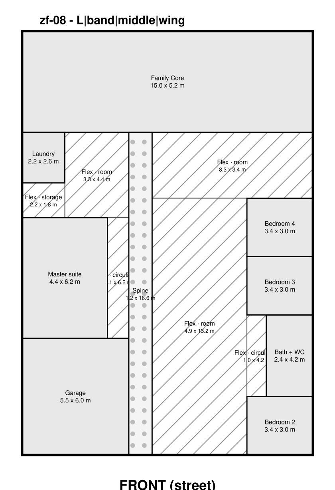
R|band|middle|wing room 107.1 m² · circulation 11.0 m² · storage 3.9 m² · sliver 0.0 m²
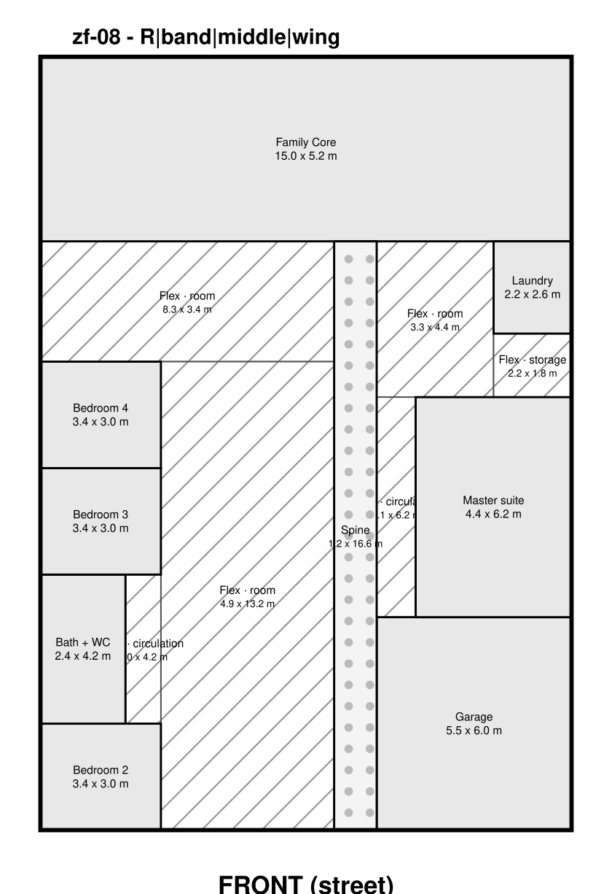
L|band|front|wing room 99.0 m² · circulation 4.2 m² · storage 17.3 m² · sliver 1.6 m²
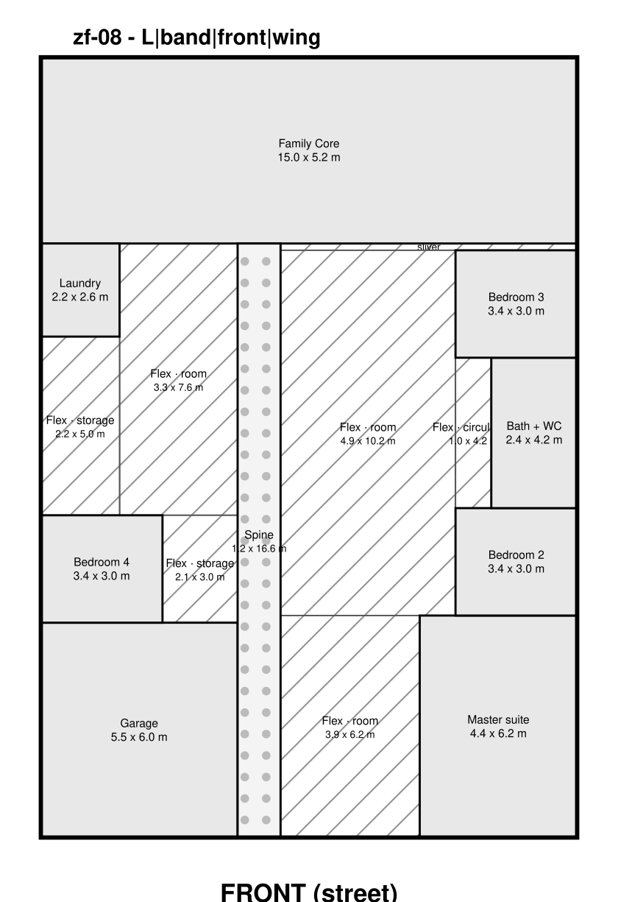
zf-09 - Florian 12990 x 16090 mm, 4 bed, double garage
valid 0/24 generated candidates (option space 36; stack wing 0/18 · garage 0/6) · reference option: INVALID - 4 bedrooms, the wet block and the laundry do not fit in the wing and the garage column (R4)
reference
zf-10 - Felix 11690 x 18090 mm, 4 bed, double garage
valid 0/24 generated candidates (option space 36; stack wing 0/18 · garage 0/6) · reference option: INVALID - 4 bedrooms, the wet block and the laundry do not fit in the wing and the garage column (R4)
reference
zf-11 - Dominic 10490 x 22190 mm, 4 bed, double garage
valid 6/24 generated candidates (option space 36; stack wing 4/18 · garage 2/6) · reference option: INVALID - the wing column and the garage column are full: 4 bedrooms do not fit (R4)
referenceL|band|middle|wing room 30.2 m² · circulation 12.7 m² · storage 4.8 m² · sliver 0.0 m²
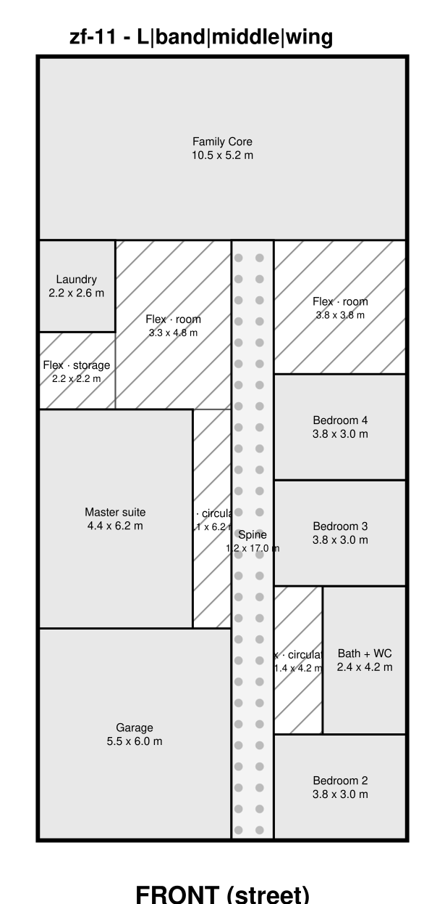
R|band|middle|wing room 30.2 m² · circulation 12.7 m² · storage 4.8 m² · sliver 0.0 m²
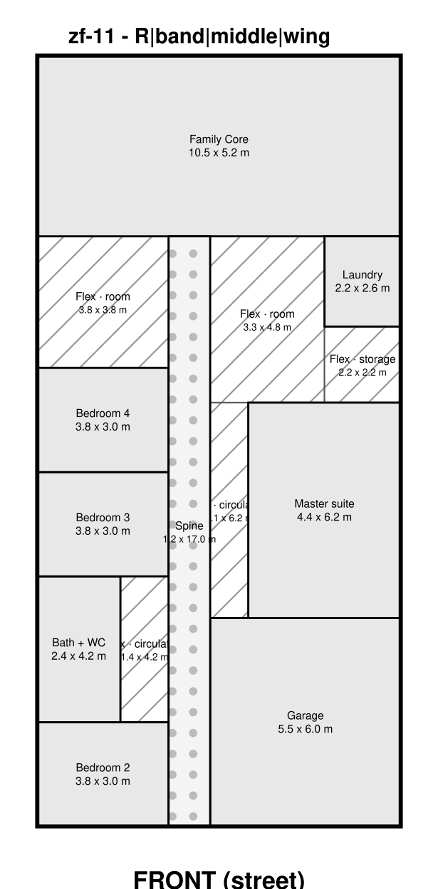
L|band|front|wing room 26.4 m² · circulation 5.8 m² · storage 17.0 m² · sliver 2.2 m²
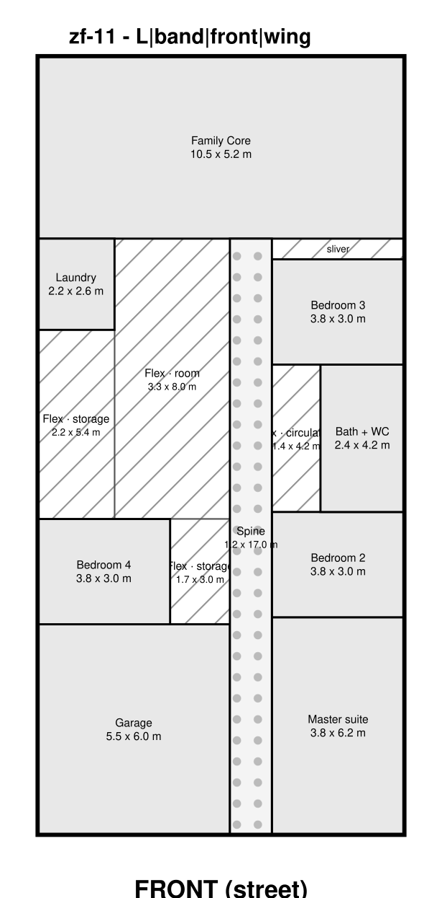
zf-12 - Cosmas 10990 x 16490 mm, 3 bed, double garage
valid 0/24 generated candidates (option space 36; stack wing 0/18 · garage 0/6) · reference option: INVALID - Master at the rear conflicts with the full-width Core band (R3/R5)
reference
zf-13 - Augustine 10490 x 18990 mm, 3 bed, double garage
valid 4/24 generated candidates (option space 36; stack wing 2/18 · garage 2/6) · reference option: INVALID - 3 bedrooms, the wet block and the laundry do not fit in the wing and the garage column (R4)
referenceL|band|front|wing room 15.8 m² · circulation 5.8 m² · storage 9.9 m² · sliver 1.5 m²
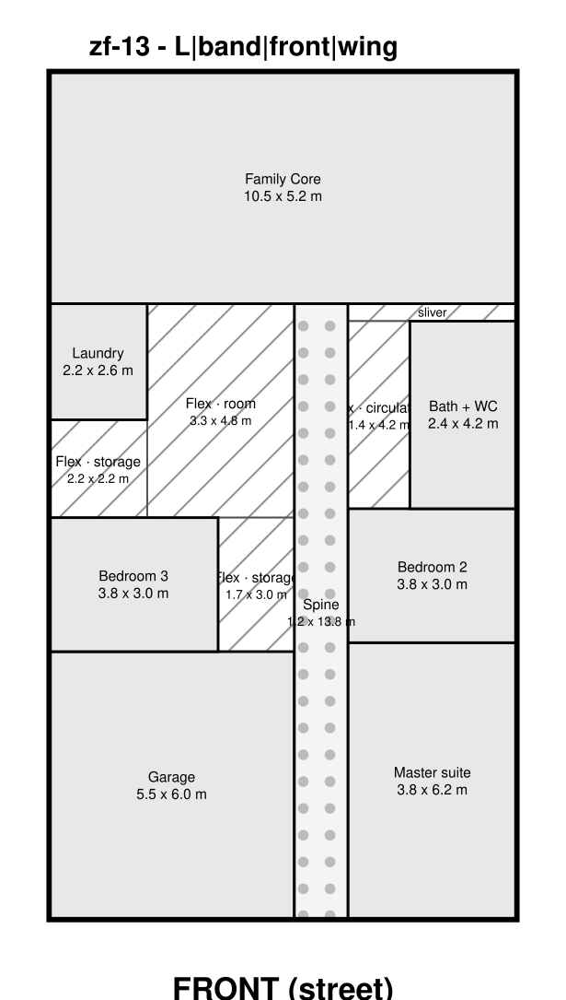
R|band|front|wing room 15.8 m² · circulation 5.8 m² · storage 9.9 m² · sliver 1.5 m²
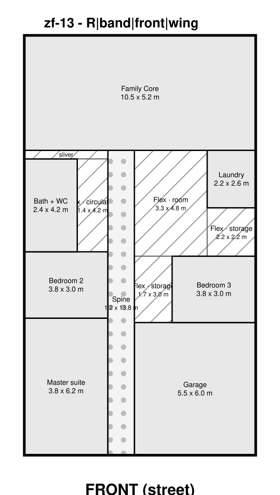
L|side-W|front|garage room 31.1 m² · circulation 4.2 m² · storage 0.0 m² · sliver 1.1 m²
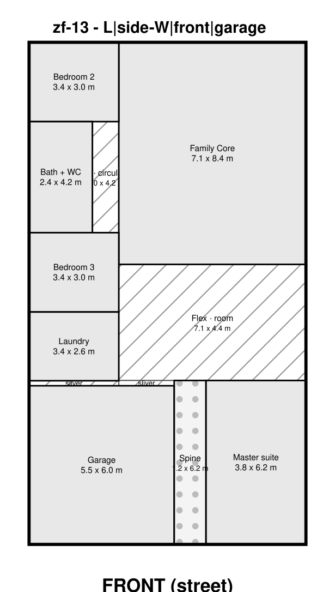
zf-14 - Bede 10990 x 16790 mm, 3 bed, double garage
zf-15 - Alban 10490 x 18490 mm, 4 bed, double garage
valid 0/24 generated candidates (option space 36; stack wing 0/18 · garage 0/6) · reference option: INVALID - 4 bedrooms, the wet block and the laundry do not fit in the wing and the garage column (R4)
reference
zf-16 - 4-bed rumpus 13550 x 23630 mm, 4 bed, double garage
valid 10/24 generated candidates (option space 36; stack wing 8/18 · garage 2/6) · reference option: INVALID - the wing column and the garage column are full: 4 bedrooms do not fit (R4)
referenceL|band|middle|wing room 101.9 m² · circulation 11.0 m² · storage 8.0 m² · sliver 0.0 m²
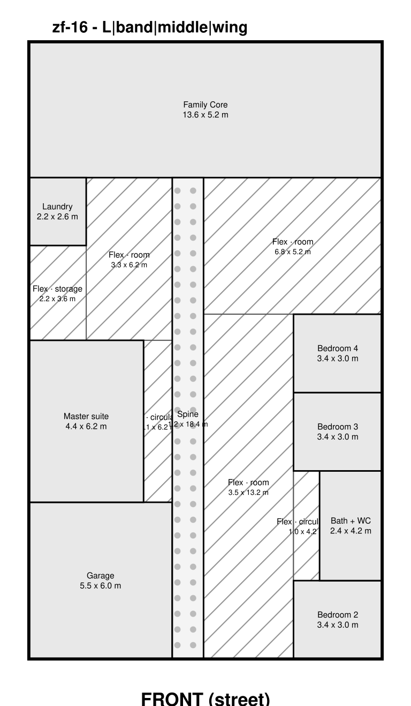
R|band|middle|wing room 101.9 m² · circulation 11.0 m² · storage 8.0 m² · sliver 0.0 m²
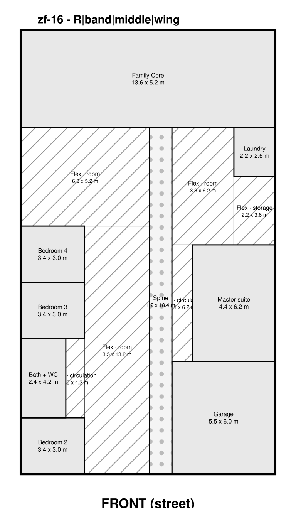
L|band|front|wing room 81.5 m² · circulation 33.1 m² · storage 6.3 m² · sliver 0.0 m²
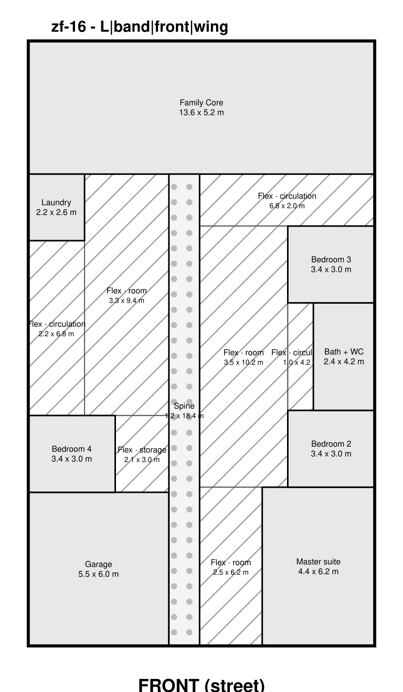
SAMPLE-15x27 - sample 15.0 x 27.0, 4 bed, double garage, WC 15000 x 27000 mm, 4 bed, double garage
valid 14/24 generated candidates (option space 36; stack wing 8/18 · garage 6/6) · no reference
reference
no reference image for this brief
L|side-G|middle|wing room 212.9 m² · circulation 11.0 m² · storage 8.4 m² · sliver 0.0 m²
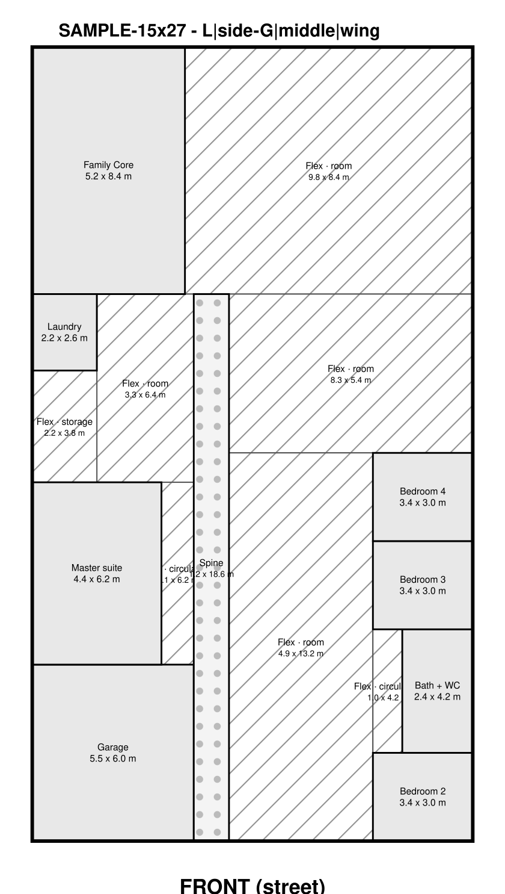
R|side-G|middle|wing room 212.9 m² · circulation 11.0 m² · storage 8.4 m² · sliver 0.0 m²
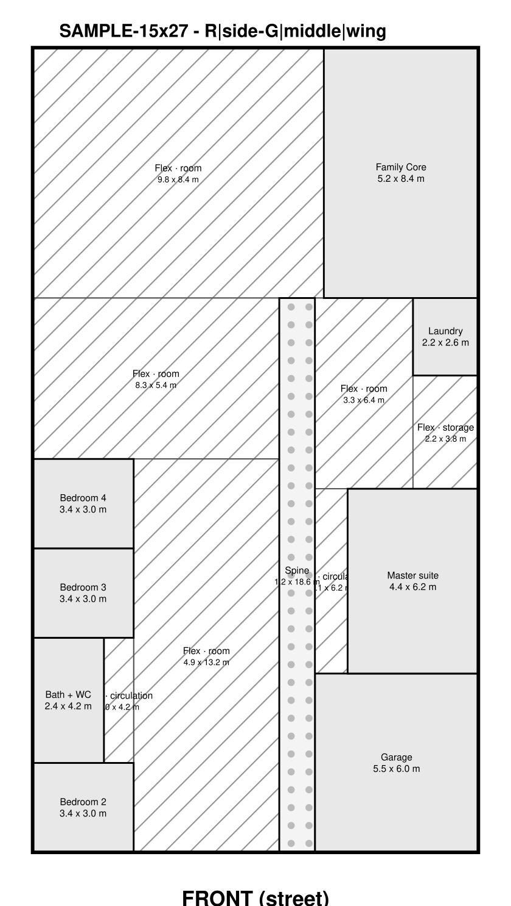
L|side-G|front|wing room 188.2 m² · circulation 37.9 m² · storage 6.3 m² · sliver 0.0 m²
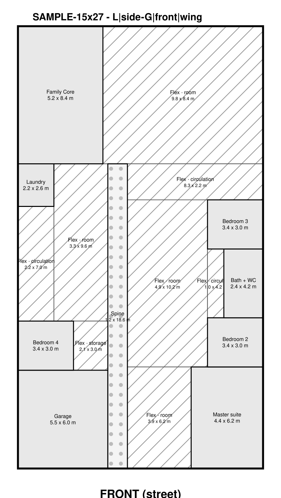
custom-8800x20550 - 8.8 x 20.55, Master + 3 bed, double garage 8800 x 20550 mm, 4 bed, double garage
valid 4/24 generated candidates (option space 36; stack wing 0/18 · garage 4/6) · no reference
reference
no reference image for this brief
L|side-W|middle|garage room 32.0 m² · circulation 0.0 m² · storage 8.2 m² · sliver 3.4 m²
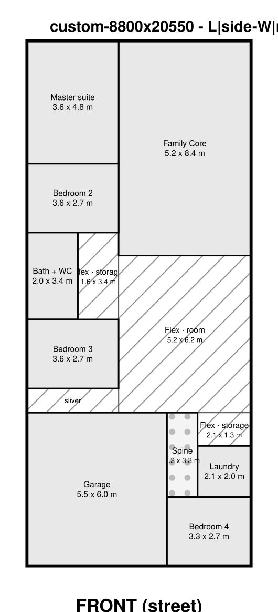
R|side-W|middle|garage room 32.0 m² · circulation 0.0 m² · storage 8.2 m² · sliver 3.4 m²